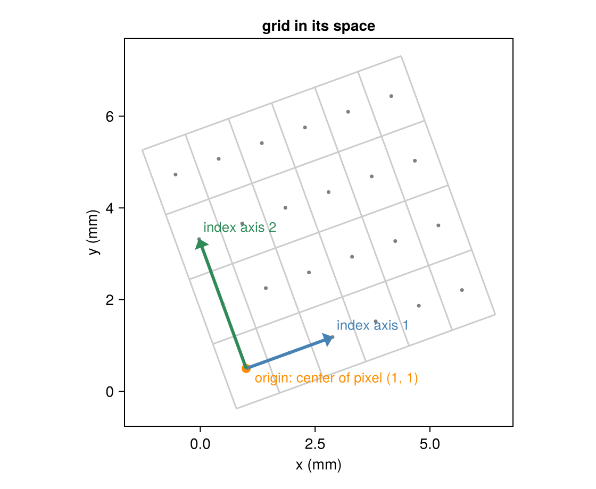

Grids, Spaces and Transforms
This page explains what the numbers of a grid geometry mean, what a space adds to them, how transforms connect spaces and how resampling uses them, and how an image describes its dimensions. Define a Space and Write a Resampler show how to add spaces and resamplers; Conventions of Formats and Packages compares the conventions with DICOM and NIfTI.
using TomoImages, CairoMakieGrids
A GridGeometry of N index dimensions places voxel i (1-based) at
\[x = o + D \, \operatorname{diag}(s) \, (i - 1)\]
where x is a position in the coordinates of the grid's space, its world coordinates. index_to_world evaluates this formula, also for fractional indices, and world_to_index its inverse.
- The origin $o$ is the center of the first voxel, not a corner and not the center of the grid.
- The spacing $s$ is the distance between neighboring voxel centers along each index axis, always positive.
- The direction $D$ holds the unit directions of the index axes as columns, in world coordinates. It is a
W × Nmatrix; usuallyW = N, more for a slice (below). Its columns are orthonormal: a grid can be rotated or reflected, never sheared or scaled. A grid whose index axis 1 runs along-xhas a direction column(-1, 0), never a negative spacing.
Lengths are plain numbers in one unit for all geometries, millimeters by convention. A grid without the keyword space lies in DefaultSpace (see Spaces below).
The figure shows a grid of 6 × 4 pixels of 1 mm × 1.5 mm, rotated by 20 degrees: the tilted gray lines are the pixel edges, the dots the pixel centers, the orange dot the origin, and the arrows the two direction columns, each drawn two pixel spacings long.
c, s = cos(deg2rad(20)), sin(deg2rad(20))
g = GridGeometry((6, 4); spacing=(1.0, 1.5), origin=(1.0, 0.5), direction=[c -s; s c])
Derived quantities are computed by functions: affine (the matrix of the formula in homogeneous coordinates), fov (the extent along each index axis, from edge to edge) and fov_center.
Selections and slices
Indexing a geometry like an array selects voxels and keeps their positions: a range moves the origin to its first voxel and multiplies the spacing by the size of its step; a negative step (a reversed range) flips the direction column. An integer drops the dimension, and the result stays in the space of the full grid: a slice of a 3D volume is a 2D grid in a 3D space, whose direction is a 3 × 2 matrix. Its pixels keep their 3D positions, here in a rotated volume:
volume = GridGeometry((8, 8, 4); spacing=(1.0, 1.0, 2.0), direction=[c -s 0; s c 0; 0 0 1])
slice = volume[:, :, 3]
size(TomoImages.direction(slice)), index_to_world(slice, (2, 5)) == index_to_world(volume, (2, 5, 3))((3, 2), true)Spaces
The positions of a grid are numbers, and numbers only mean something in a coordinate system: the coordinates of a CT scanner, those of an MPI scanner, or a patient space such as LPS (+x toward the patient's left, +y posterior, +z superior) or RAS (+x right, +y anterior, +z superior). The space of a grid names this coordinate system; DefaultSpace stands for a single coordinate system that never meets another.
Two grids with the same numbers in different spaces describe different voxels, so isapprox returns false for them and resample refuses to combine them without a transform between the spaces. Conversely, the same voxels have different numbers in different spaces. transform_geometry writes the same voxels in another space, and nothing moves; from LPS to RAS, the first two coordinates change sign:
t = transform_between(LPS(), RAS())
lps = GridGeometry((4, 4, 2); origin=(10.0, 20.0, 30.0), space=LPS())
ras = transform_geometry(lps, t)
TomoImages.origin(ras), index_to_world(ras, (4, 1, 1)) == t(index_to_world(lps, (4, 1, 1)))([-10.0, -20.0, 30.0], true)A space holds no numbers about other spaces; how two spaces relate is the job of transforms. Spaces are types, so packages define their own (Define a Space), and they are part of the types of geometries and transforms.
Transforms
A transform maps positions from its source space to its target space. The transform of this package is AffineTransform, x -> A x + b; inv(t) reverses it. The relations between spaces come from three places:
- conventions that hold without data, such as LPS and RAS (
transform_between); - acquisition metadata, such as the position of the bed (methods of
transform_betweenin the packages that read the metadata); - registration or calibration between scanners, computed by other packages.
TomoImages.compose(t2, t1), also written t2 ∘ t1, applies t1, then t2, and checks that target(t1) == source(t2). Transforms are stored in the direction resampling needs (next section).
Resampling
resample computes, for every voxel of the output grid, where to read in the input: output index → position in the output space → (transform) → position in the input space → fractional input index. The whole chain is one affine map from output to input indices (TomoImages.IndexMap), computed once. Each output voxel gets exactly one value. The opposite, sending every input voxel to the output, leaves some output voxels without a value or gives some several, as soon as the grids differ in spacing or orientation.
Resampling therefore needs the transform from the output space to the input space. In registration terms the output is the grid of the fixed image and the input is the moving image, and registration results are stored in this direction, from fixed to moving. For an affine transform this is a convention, since its inverse is cheap. For a deformation field it decides whether resampling needs an inverse that has no closed form.
The resamplers read the input over the extent of its voxels: up to half a voxel beyond the outermost voxel centers they take the value at the edge, and farther out they write the keyword fillvalue (default zero). Nearest-neighbor resampling keeps the element type and is the default for integer and Bool images such as label maps and masks, whose values must not be averaged. Multilinear interpolation is the default otherwise; it turns integers into Float32.
Dimensions
An image describes every array dimension by name. A grid dimension is a GridAxis(k): index axis k of the geometry. It has no coordinates of its own, because the direction of the geometry may mix the index axes; the name only labels the index axis. Every other dimension is a vector of values: coordinates with a unit (NumericAxis), labels (CategoricalAxis), or any AbstractVector. Grid dimensions may sit anywhere among the others and in any order: MPI reconstructions have (contrast, x, y, z, time).
Integers and ranges always select by index, also by name (img[time=3]); values are selected with selectvalue. An integer coordinate such as coil 3 is then never confused with the third index. permutedims reorders the dimensions and keeps the geometry, since every grid dimension names its index axis.
This page was generated using Literate.jl.